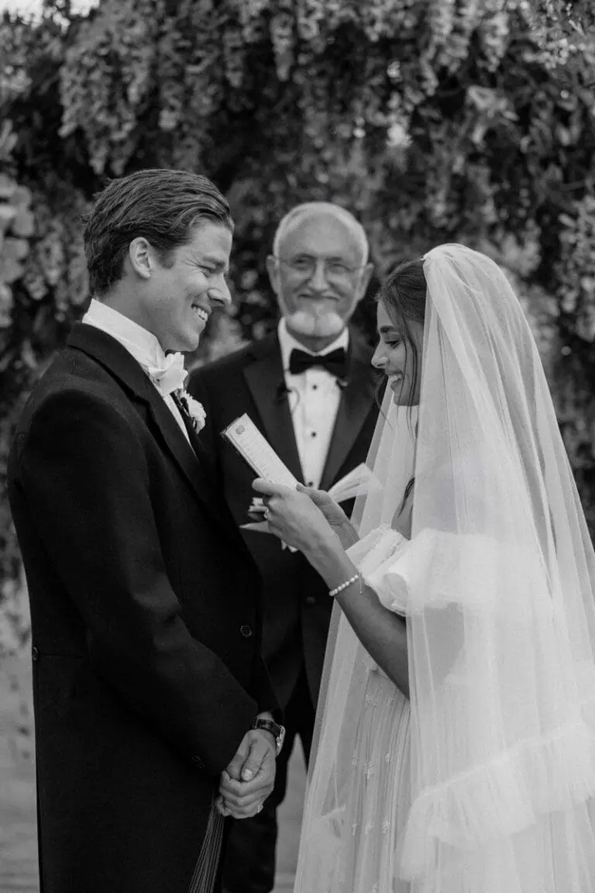
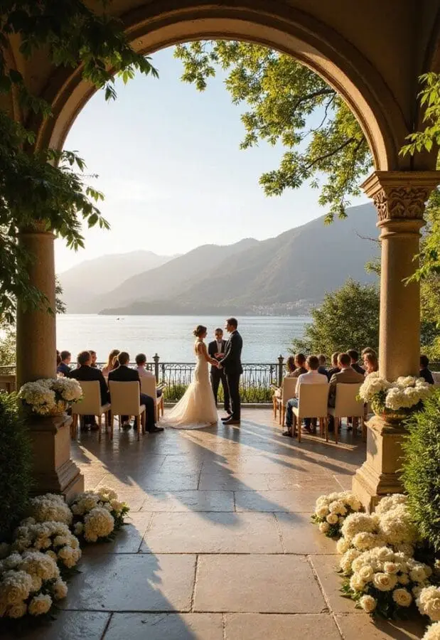
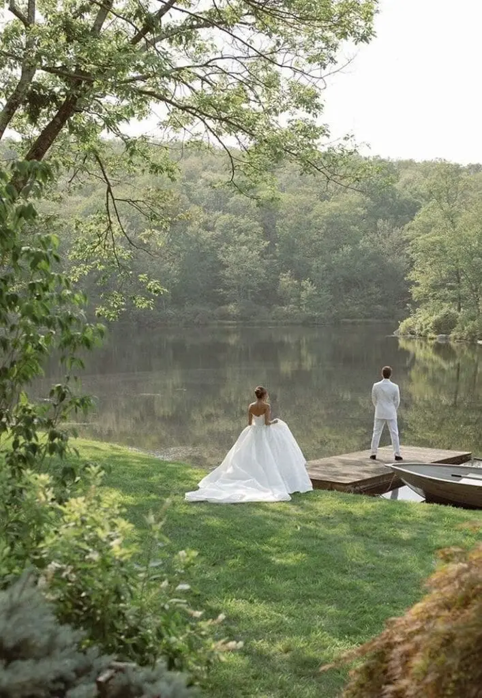
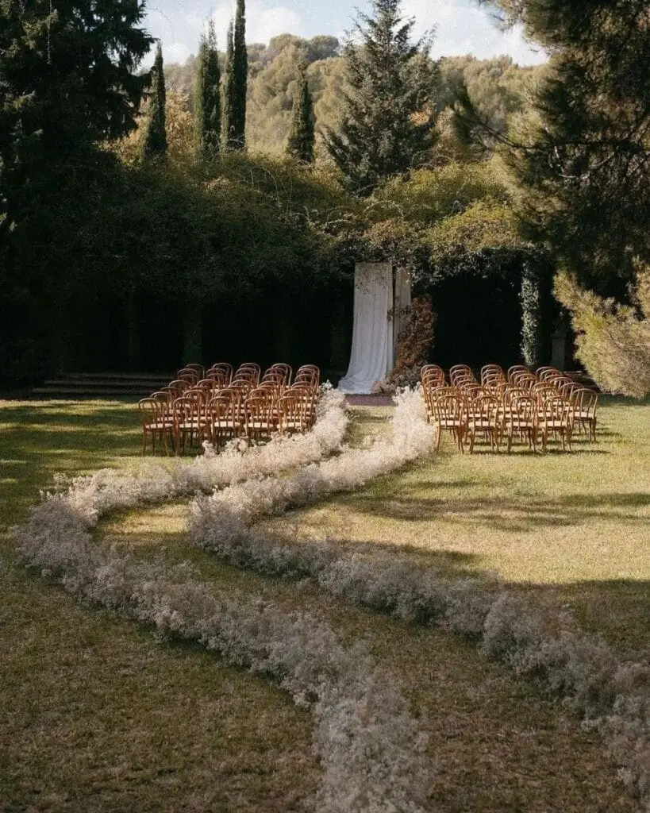
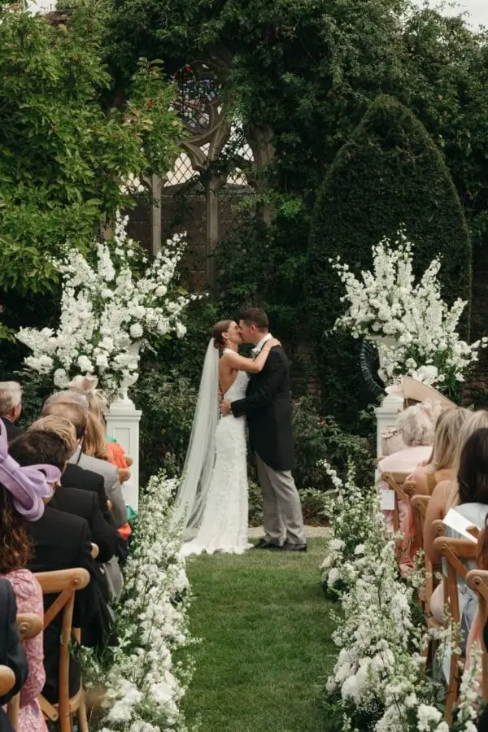
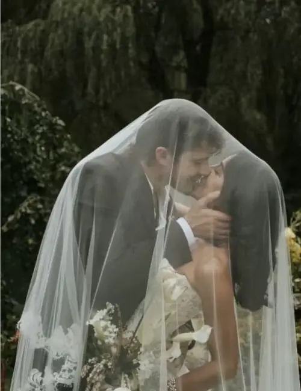

Écrire ses vœux, pour un mariage, un anniversaire, une naissance ou la nouvelle année, peut sembler simple en apparence. Après tout, il “suffit” de parler de ses sentiments. Mais justement : mettre des émotions en mots n’a rien d’automatique. Beaucoup se retrouvent paralysés par le syndrome de la page blanche, cette impression étrange que tout est important… donc impossible à formuler.
La pression n’aide pas. On veut éviter les banalités. On veut toucher sans exagérer. On veut être sincère sans être maladroit. Alors on attend “la bonne phrase”. Elle ne vient pas.
La bonne nouvelle ? L’émotion ne se force pas, mais elle se travaille. Comme un muscle, l’écriture gagne en fluidité quand on lui donne des points d’appui concrets. Il ne s’agit pas d’être écrivain, mais d’être vrai. Avec les bonnes méthodes, des exercices simples et quelques repères clairs, il devient possible de transformer ce silence intimidant en texte personnel, vivant et touchant, sans tomber dans les clichés ni chercher la perfection.
Pourquoi la page blanche nous bloque
Ce n’est pas un manque d’amour ni un manque d’inspiration qui explique le silence face à la feuille blanche. Au contraire, si écrire devient difficile, c’est souvent parce que l’enjeu est important. On veut bien faire, on veut toucher juste.
La peur d’être trop banal s’installe rapidement. On redoute d’écrire des phrases déjà entendues, des formules vues mille fois, des mots qui sembleraient fades ou impersonnels. Alors on efface avant même d’avoir commencé.
À cela s’ajoute la pression d’être “à la hauteur”. À la hauteur de la relation, de l’événement, des attentes supposées de l’autre. Plus l’émotion est forte, plus on craint de mal la traduire. Cette exigence invisible peut devenir paralysante.
Enfin, il y a l’envie d’être parfait. Trouver la phrase idéale, le mot exact, la structure irréprochable. Mais cette quête de perfection fige l’écriture. À force de vouloir que tout soit exceptionnel, on bloque le mouvement naturel des idées.
Résultat : on n’écrit rien. Pourtant, des vœux réussis ne sont pas parfaits, ils sont authentiques. Ce qui touche, ce n’est pas la performance, mais la sincérité.
Méthode 1 : La mémoire sensorielle
Au lieu de chercher immédiatement “quoi dire”, changez de point de départ. Ne cherchez pas une belle phrase. Cherchez une image. Interrogez-vous simplement : quelle est la première scène qui me revient spontanément ? Quel moment précis, presque banal, mais profondément marquant ?
Pensez en termes sensoriels. Quelle odeur vous revient ? Celle d’un café partagé trop tôt le matin, d’un parfum familier, de l’air salé après une promenade près de l’océan ? Quel lieu précis apparaît ? Une rue, une cuisine, un quai, une voiture arrêtée sur le bas-côté ? Quel détail presque invisible refait surface : un éclat de rire, une main posée sur une épaule, une phrase murmurée à voix basse ?
Exercice : prenez cinq minutes pour écrire trois souvenirs très concrets. Pas des généralités. Pas “nos vacances”, pas “nos moments heureux”. Cherchez la scène exacte.
Évitez les formulations vagues comme :
“On a vécu des moments incroyables.”
Préférez une évocation incarnée :
“Je me souviens de ce dimanche pluvieux sur les quais de Bordeaux, quand on a couru sous la pluie en riant, trempés mais heureux.”
Dans cette seconde phrase, on voit la scène, on sent la pluie, on entend les rires. Le détail transforme un souvenir abstrait en expérience vivante. Et c’est précisément là que naît l’émotion.


Méthode 2 : La phrase inachevée
Parfois, ce qui bloque n’est pas l’émotion, mais le point de départ. Pour contourner cette difficulté, utilisez la technique de la phrase inachevée. Elle permet d’entrer dans l’écriture sans pression, presque comme une conversation commencée à voix basse.
Complétez spontanément des débuts de phrases simples :
“Avant toi, je…”
“Avec toi, j’ai appris…”
“Je ne t’ai jamais dit que…”
“Si je devais résumer notre histoire en une image…”
L’objectif n’est pas d’écrire quelque chose de beau. L’objectif est d’écrire quelque chose de vrai. Ne réfléchissez pas trop longtemps. Lancez-vous et laissez venir les mots, même s’ils vous paraissent imparfaits, maladroits ou trop simples.
Accordez-vous cinq minutes d’écriture continue. Ne corrigez rien. Ne relisez pas immédiatement. Cette écriture spontanée fait souvent émerger des formulations inattendues, plus naturelles, plus personnelles.
La sincérité brute est souvent plus touchante qu’un texte trop travaillé. C’est dans cette première matière, encore imparfaite, que se trouvent les phrases les plus justes.


Méthode 3 : La structure simple en 3 temps
Lorsque l’émotion est forte, on peut vite se disperser. Les souvenirs affluent, les idées s’entremêlent, et le texte perd en clarté. Pour éviter de vous perdre, adoptez une structure simple et efficace en trois temps. Elle sert de fil conducteur et vous aide à organiser vos pensées sans rigidité.
Commencez par le passé. Racontez comment tout a commencé. Une rencontre, un détail, une première impression, un moment fondateur. Il ne s’agit pas de tout retracer, mais de poser le point de départ, celui qui donne du sens à ce que vous vivez aujourd’hui.
Enchaînez avec le présent. Expliquez ce que la personne représente dans votre vie maintenant. Ce qu’elle a changé, ce qu’elle apporte, ce que vous ressentez à ses côtés. Cette partie est souvent la plus intime, car elle parle de l’équilibre actuel, de la place occupée dans votre quotidien.
Enfin, ouvrez sur le futur. Exprimez ce que vous souhaitez construire, partager, traverser ensemble. Pas besoin de promesses grandioses. Parfois, évoquer des choses simples, continuer à rire des mêmes blagues, affronter les imprévus à deux, se soutenir dans les projets à venir, suffit à rendre cette projection sincère et touchante.
Cette progression naturelle rassure autant celui qui écrit que celui qui écoute. Elle donne du rythme, crée une montée en émotion et permet de conclure sur une note tournée vers l’avenir, pleine d’élan et de cohérence.
Comment éviter les clichés
Certains mots sont beaux, mais à force d’être utilisés, ils perdent de leur force. Des expressions comme “âme sœur”, “pour toujours” ou “l’amour de ma vie” semblent intenses, mais elles restent génériques. Elles pourraient s’appliquer à presque n’importe quelle histoire.
Le problème n’est pas qu’elles soient fausses. C’est qu’elles ne disent rien de spécifique sur votre relation. Or, ce qui touche profondément, c’est le singulier, pas le spectaculaire.
Plutôt que d’affirmer une grande idée, montrez-la à travers une situation précise.
Au lieu d’écrire :
“Tu es l’amour de ma vie.”
Essayez :
“Tu es la seule personne avec qui je peux parler pendant deux heures sans voir le temps passer.”
Dans la seconde phrase, on comprend l’intensité du lien sans qu’elle soit déclarée frontalement. On perçoit la complicité, la fluidité, la présence.
L’émotion naît du concret. Plus vous décrivez des gestes, des habitudes, des scènes vécues, plus vos mots deviennent incarnés. Et ce sont ces détails, parfois simples, qui rendent vos vœux profondément personnels.
Exercice express : 10 minutes chrono
Si vous manquez de temps ou si vous sentez que l’inspiration tarde, cet exercice rapide permet de débloquer l’essentiel en quelques minutes. Il repose sur une idée simple : partir de l’observation plutôt que de la déclaration.
Commencez par écrire une liste de dix choses précises que vous aimez chez la personne. Évitez les qualités trop larges comme “gentil” ou “incroyable”. Cherchez des éléments concrets : sa façon de raconter une histoire, son rire discret, sa manière de vous rassurer, son regard quand elle est concentrée, son humour inattendu.
Une fois la liste terminée, relisez-la et entourez-en trois. Pas forcément les plus impressionnantes, mais celles qui vous touchent le plus.
Pour chacune de ces trois qualités, racontez ensuite une petite scène réelle qui l’illustre. Un moment vécu, même bref. C’est ce passage du mot abstrait à la situation concrète qui donne de la profondeur à vos vœux.
Par exemple :
“J’aime ta patience. Comme ce jour où j’ai douté de tout, et où tu as simplement posé ta main sur la mienne sans chercher à tout résoudre.”
Ici, la qualité n’est pas seulement affirmée, elle est incarnée. On voit le geste, on ressent le soutien.
Simple. Vrai. Suffisant.


Liens vers quelques conseils
En Bref...
Les plus beaux vœux ne sont pas les plus littéraires. Ils ne cherchent pas à impressionner. Ils sont personnels, ancrés dans une histoire réelle, dans des gestes, dans des souvenirs partagés. Une hésitation dans la voix, un souffle un peu tremblant, un sourire inattendu, une phrase légèrement maladroite mais sincère valent souvent bien plus que des formulations parfaitement construites.
On croit parfois qu’il faut écrire “comme dans un film” pour que ce soit réussi. En réalité, ce qui touche, c’est la vérité du moment. Les mots trop polis, trop travaillés, peuvent créer une distance. À l’inverse, une phrase simple, dite avec le cœur, crée une connexion immédiate.
Que vous écriviez depuis un café du centre de Bordeaux, face aux dunes de la côte atlantique balayées par le vent, ou depuis votre salon en Nouvelle-Aquitaine, souvenez-vous que la feuille blanche n’est pas un obstacle. C’est un espace. Un espace pour raconter votre histoire à votre manière.
Et parfois, il suffit d’une première phrase imparfaite, écrite sans trop réfléchir, pour que tout s’ouvre. Parce qu’en matière de vœux, ce n’est pas la perfection qui marque les esprits, mais l’authenticité.
Lovely Day Event c'est plusieurs types de prestations
L'organisation de mariage
Je vais intervenir sur toutes les étapes de vos préparatifs et vous guider dans vos choix. Je suis force de proposition pour que votre mariage ne ressemble qu’à vous.
Décoration de mariage
Créative et passionnée, je suis certifiée Wedding Designer et je conçois une ambiance scénographique qui correspond au thème de votre mariage.
Coordination le jour J
Je serai le chef d’orchestre pour gérer les différents prestataires, la mise en place de votre décoration et le déroulement de cette belle journée.